Handwritten notes, with ink that keeps up with your pen.
Noteic is a free notebook for Windows, made for the Surface Pen and other Windows pens. Real pages or a whiteboard, no account, no subscription.
- Free, every feature
- Windows 10 and 11
- ARM64 and x64
- No account
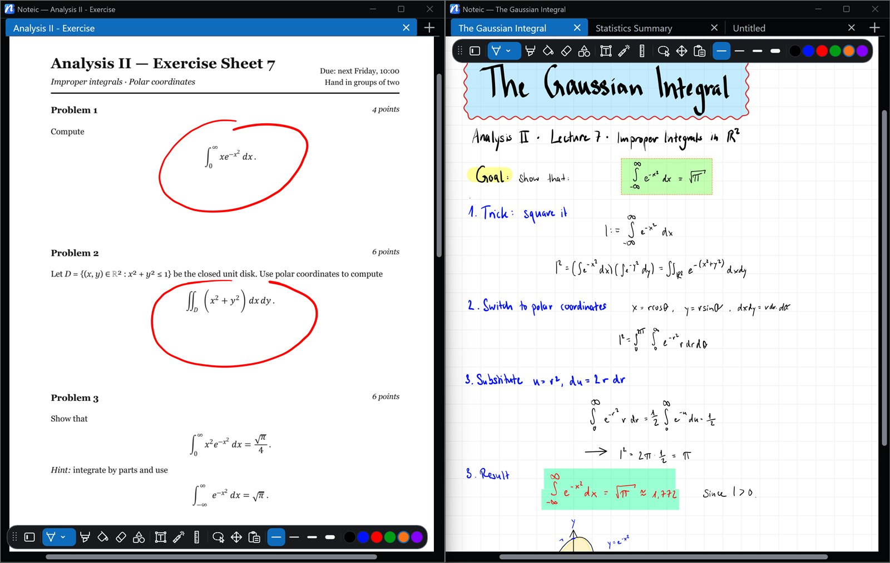
- 45shapes
- 10paper styles
- 9accent colors
- 0accounts needed
Stickers, more room and your colors
Save anything you wrote as a sticker, make room on the whiteboard, recolor with your toolbar colors and switch tools with your pen.
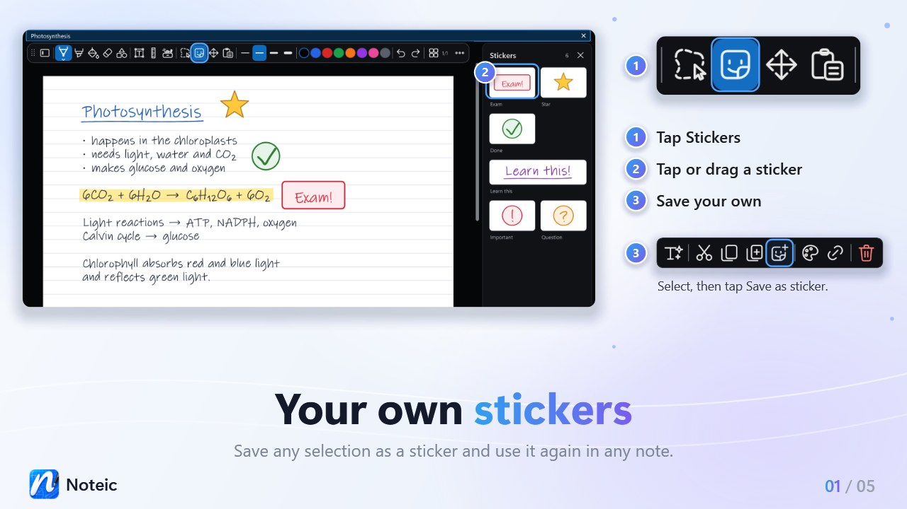
Stickers
Save any selection as a sticker and place it again in any note or whiteboard, with a tap or by dragging it.
How it works
Insert space
Make room on the whiteboard: drag down or right, and everything after the line moves along.
How it works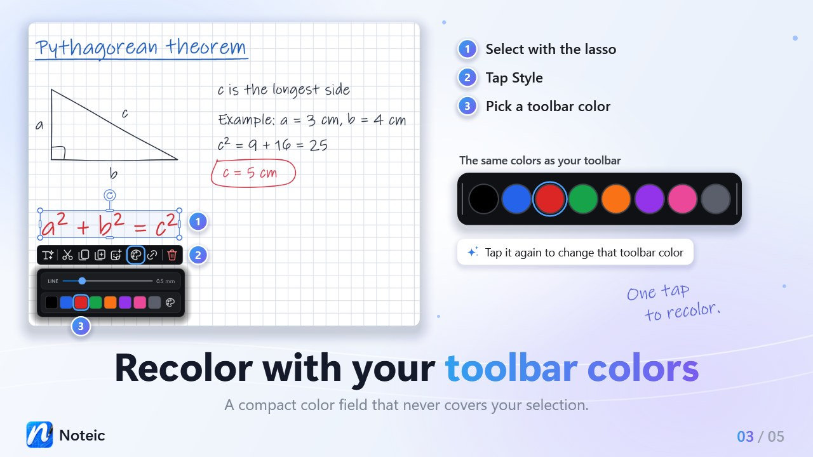
Recolor with your toolbar colors
Tap Style in the selection bar and pick one of your toolbar colors. Tap it again to change that color.
How it works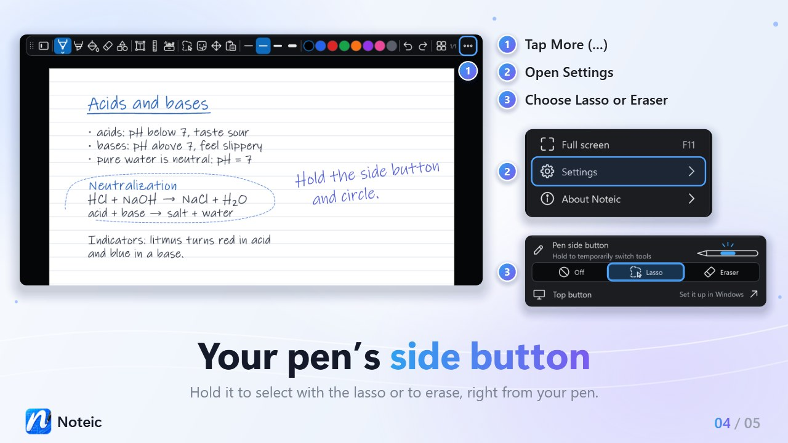
Pen side button
Hold the side button of your pen to select with the lasso or to erase, without picking another tool.
How it worksWhiteboard. Room for every idea.
One page that grows on all four sides as you write, up to about 10.3 × 21.2 m. With the same pens, shapes, text boxes, images and stickers as your notes.

- Grows on all four sides
- Double-tap to see everything
- Insert space to make room
- Export what you see as PDF
Export what you see, new shapes and your own colors
Save exactly what is on screen as a PDF, draw 3D shapes and block arrows, and make every color field your own.
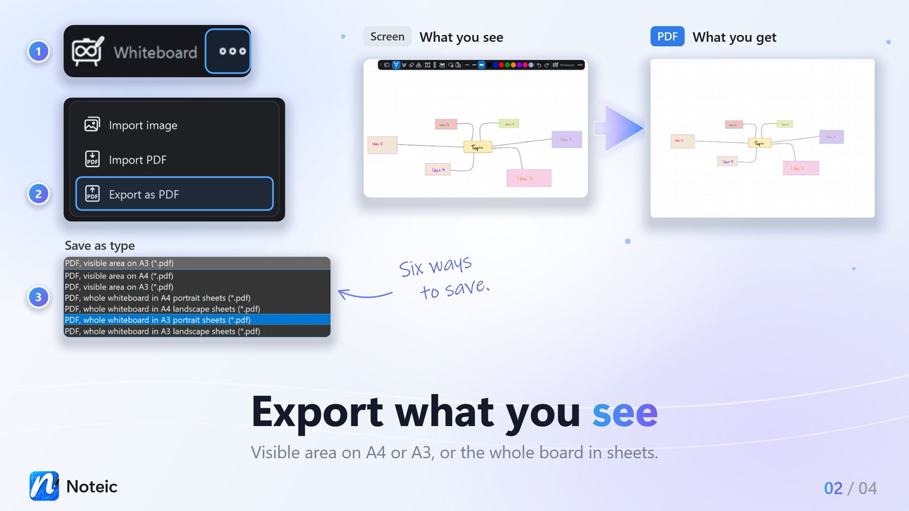
Export what you see
Save the visible area of your whiteboard as a PDF on A4 or A3, or the whole whiteboard in sheets.
How it works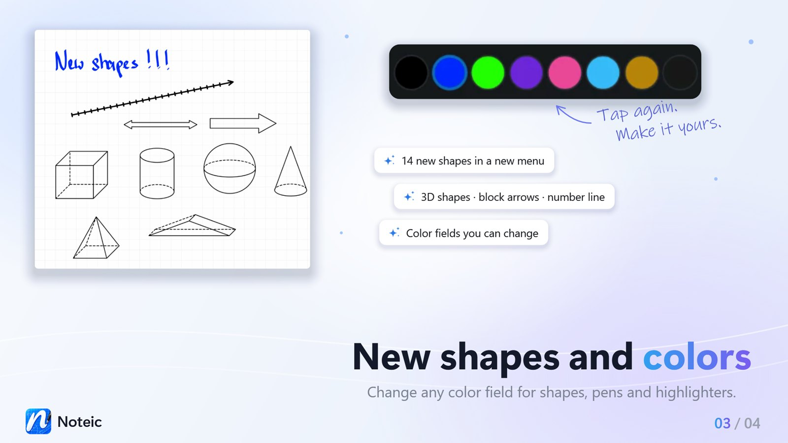
14 new shapes, your own colors
3D shapes, block arrows and a number line, and color fields you can change for shapes, pens and highlighters.
How it works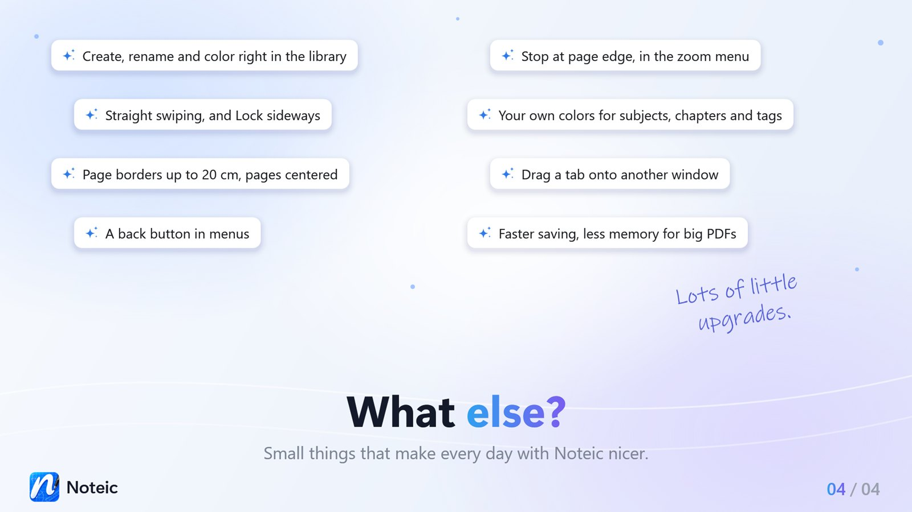
A tidier library
Create, rename and color right in the list, with your own colors for subjects, chapters and tags.
How it worksEverything you need to think on paper
From the first stroke to the finished PDF, Noteic keeps your notes fast, clean and organized.
Ink that keeps up with your pen
Pressure, no re-sharpening when you lift the pen, and palm rejection: touch scrolls and zooms, only the pen writes. Ballpoint, fountain pen, calligraphy pen and highlighter.
Pens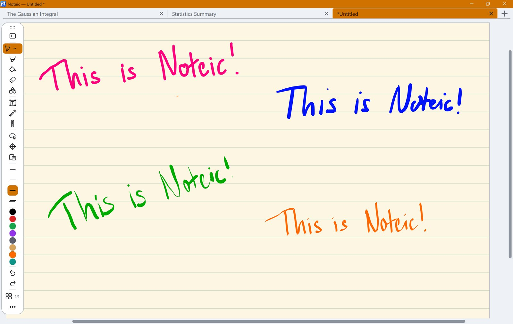
Memo tape
Cover answers with tape and tap to reveal them. Every note opens covered again.
Memo tape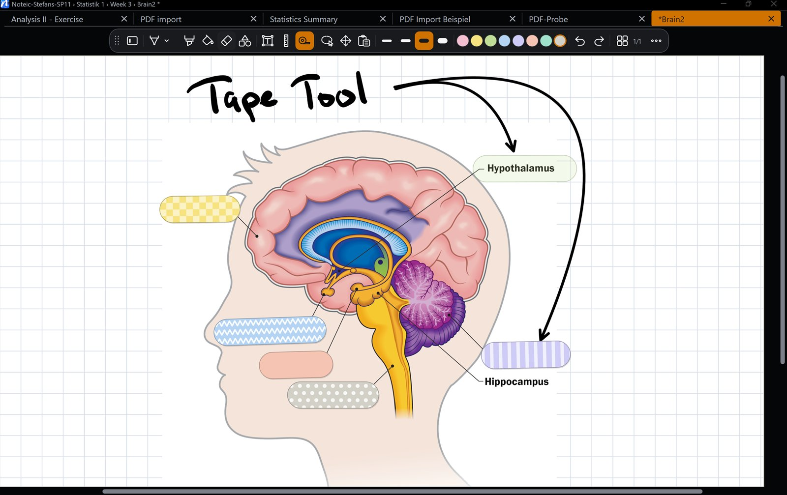
Clean shapes
45 shapes, including 3D shapes, plus shape recognition, ruler and protractor.
Shapes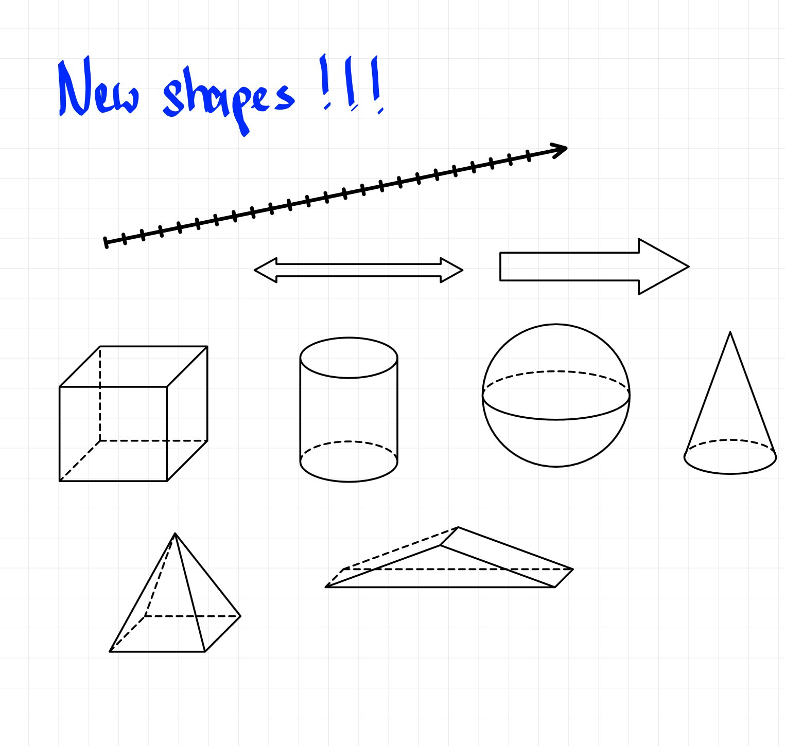
Write on your PDFs
Import lecture slides or worksheets, pick exactly the pages you need, write on them and export everything as a sharp vector PDF.
PDF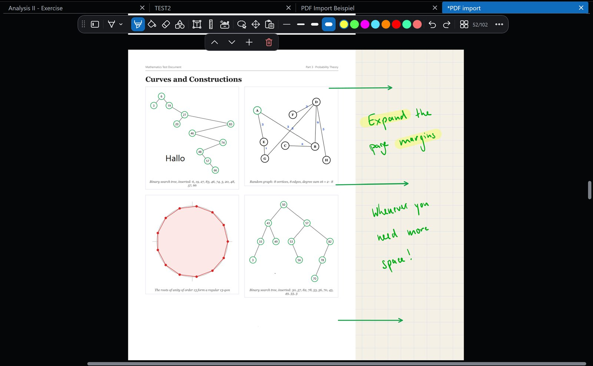
Text, tables and LaTeX
Text boxes with fonts, colors, lists and checklists, tables with merged cells and LaTeX formulas with a live preview.
Text, formulas and tables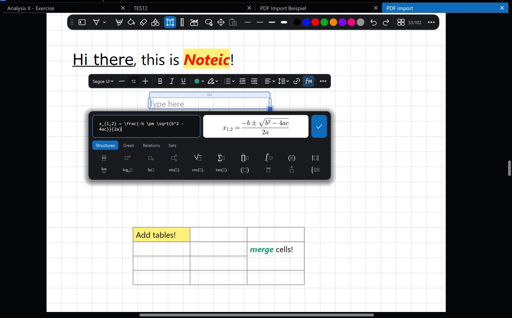
A library for your semester
Subjects, chapters, notes and sub-notes, with colors, icons, tags, favorites and search filters. One workspace per semester.
Library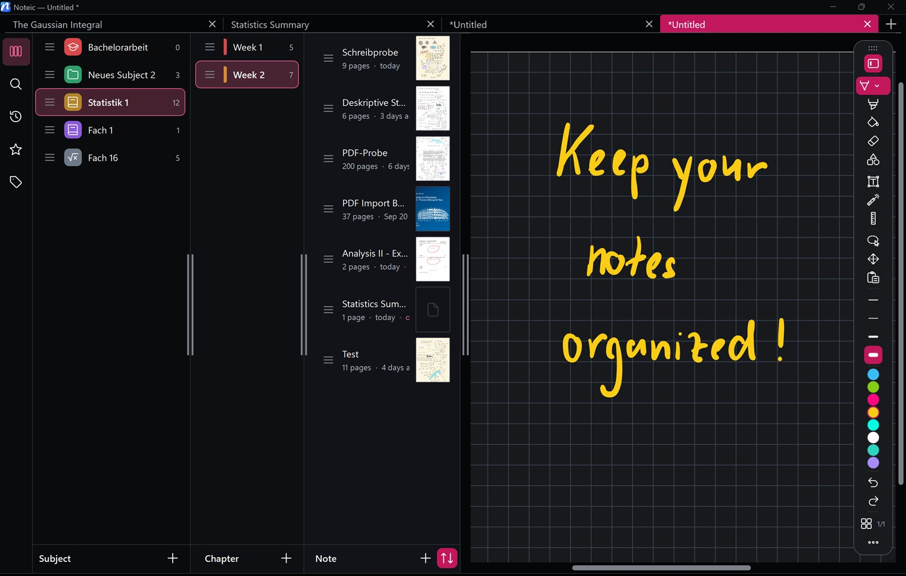
Made for writing by hand
Handwriting to text
Select your ink with the lasso and tap Convert to text, right on your device.
Lasso selection
Move, scale, rotate, copy and recolor, or drag onto another page.
Your own toolbar
Keep the tools you use, move the rest into the drawer and put the toolbar on any edge.
Ten paper styles
From ruled and grid to Cornell, music and hexagon, on A6 to A3, Letter, Legal and more.
Extend a page
Add room next to a page or a PDF: up to 20 cm left and right, 5 cm top and bottom.
Links
Link handwriting to a spot in your notes, and text to the web.
Tabs and windows
Open notes side by side and drag a tab out or onto another window.
Light and dark
Follow Windows or pick a mode, with nine accent colors.
Laser pointer
A trail that fades by itself, for presenting from your notes.
Page overview
All pages at a glance, with colored bookmarks and drag to reorder.
Keyboard shortcuts
Made for the pen, with shortcuts when a keyboard is attached.
Autosave
Noteic saves while you write and brings your windows back.
Your notes are your files
No account, no ads and no telemetry. Notebooks are .noteic files in a folder you choose, so OneDrive and other cloud folders just work.
Read the privacy policy →- Works offline
- Handwriting recognition runs on your device
- Nothing is sent to the developer
- Export everything as PDF at any time
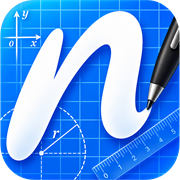
Start writing today
Noteic is free in the Microsoft Store. Every feature, no trial, no subscription.